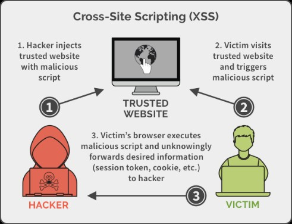
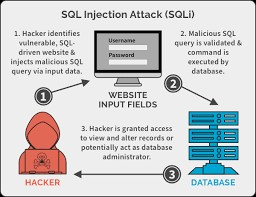
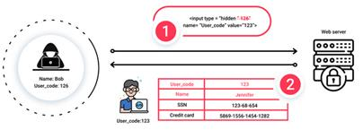
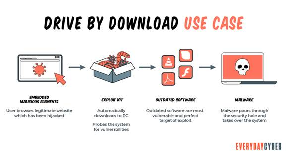
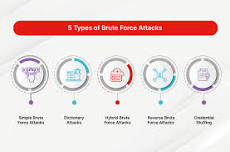
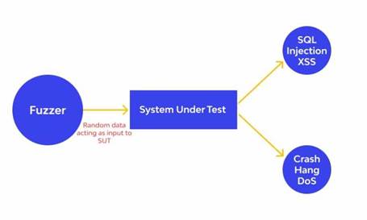
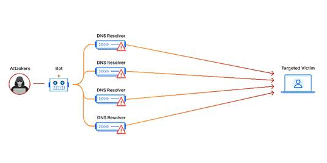
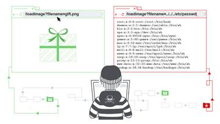

| Activity | Date |
|---|---|
| First day to enrol for re-enrolling (continuing students) | 21 Nov 2022 |
| Orientation for new students (Sydney) | 14 Aug 2023 |
| Lectures commence (weeks 1 - 10) | 21 Aug - 27 Oct 2023 |
| Last day to enrol / add subjects yourself | 08 Sep 2023 |
| Last day to enrol / add subjects with Head of Students approval | 08 Sep 2023 |
CENSUS DATE
Learn more about Census date > |
11 Sep 2023 |
| Student Services and Amenities Fees Due | 12 Sep 2023 |
| Last day to withdraw without academic penalty - subject deleted from record Fail grade recorded if subject withdrawn after this date | 29 Sep 2023 |
| Lectures Commence (weeks 1-10) | 21 Aug - 27 Oct 2023 |
| Name | Web Attacks |
|---|---|
|
Cross-Site Scripting  |
Cross-site scripting (XSS) attacks trick a browser into delivering malicious client-side scripts to the victim’s browser, which will automatically execute it once received. This malware can exfiltrate data, install malware, or redirect the user to a spoofed site. - Read more - https://owasp.org/www-community/attacks/xss/ |
|
SQL Injection Attacks  |
SQL injection attacks are one of the most successful online ploys of the past ten years, and allow attackers to compromise a server’s cookies, web forms, or HTTP posts in order to manipulate data out of the database. They exploit input fields (like those you’d see in an online form) and inject malicious script designed to trick the server into providing unauthorized (and yet not protected) sensitive database information. Preventing against SQL injection attacks requires the same stringency for data input, and a limited set of functions permissible through SQL commands. Read more - https://spanning.com/blog/sql-injection-attacks-web-based-application-security-part-4/ |
|
Broken Authentication  |
Broken authentication – or any sort of illegitimate login-based access – can be executed in a number of ways: brute force, credential stuffing, dictionary attacks, and more. Preventing broken authentication attacks can be as easy as making a super-secure password, or as reliable as switching to tokenized Multi-Factor Authentication (MFA). Read more - https://www.prplbx.com/resources/blog/broken-authentication/ |
|
SDrive-by download  |
Drive-by downloads occur when a user visits a website and a malicious agent downloads onto the victim’s computer automatically. It can happen when the user is downloading something else or upon opening an email, clicking a pop-up window, or merely visiting a page. Since drive-by attacks take advantage of latent security vulnerabilities in apps, browsers, and operating systems, it’s important to keep your environment up to date. Limiting the number of web plug-ins and applications you install also reduces your attack surface. Read more - https://www.everydaycyber.net/what-is-a-drive-by-download/ |
|
Brute force Password-based attacks  |
Brute force Password-based attacks (systematically guessing at the correct password). Implementing code signing, enforcing strong password requirements, setting up MFA, and operating on the principle of least privilege will reduce the chance of password-based attacks. Read more - https://www.fortinet.com/resources/cyberglossary/brute-force-attack |
|
Fuzzing  |
Fuzz testing works by initially inputting a large amount of random data (fuzz) into an application to get it to crash. The next step is using a fuzzer software tool to identify the weak spots. If there are any loopholes in the target's security, the attacker can further exploit it. The best way to combat a fuzzing attack is by keeping your security and other applications updated. This is especially true for any security patches that come out with an update that the perpetrators can exploit if you haven’t made the update yet. Read more - https://securityboulevard.com/2022/01/what-is-fuzz-testing-what-is-it-used-to-test-for/ |
|
Using components with known vulnerabilities |
a vulnerability or exploit hidden in a downstream dependency, or left over from an Open-Source code repository, could lead to compromise in the final site. Many companies are vetting their third-party suppliers for security compliance prior to partnering to avoid this scenario, and leaning on code signing, quality control policies, and internal threat detection to prevent (or protect against) vulnerable dependencies that slip through. Read more - https://www.securecodewarrior.com/article/coders-conquer-security-share-learn-series-using-components-with-known-vulnerabilities |
|
DDoS (Distributed Denial-of-Service)  |
The DDoS attack aims to overwhelm the target’s web server with requests, making the site unavailable for other visitors. A botnet usually creates a vast number of requests, which is distributed among previously infected computers. Also, DDoS attacks are often used together with other methods; the former’s goal is to distract the security systems while exploiting a vulnerability. Protecting your site against a DDoS attack is generally multi-faceted. First, you need to mitigate the peaked traffic by using a Content Delivery Network (CDN), a load balancer and scalable resources. Secondly, you also need to deploy a Web Application Firewall in case the DDoS attack is concealing another cyberattack method, such as an injection or XSS. Read more - https://www.cloudflare.com/en-gb/learning/ddos/what-is-a-ddos-attack/ |
|
MiTM (Man-in-the-Middle) |
Man-in-the-middle attacks are common among sites that haven’t encrypted their data as it travels from the user to the servers (sites using HTTP instead of HTTPS). The perpetrator intercepts the data as it’s being transferred between two parties. If the data isn’t encrypted, the attacker can easily read personal, login or other sensitive details that travel between two locations on the Internet. A straightforward way to mitigate the man-in-the-middle attack is to install a Secure Sockets Layer (SSL) certificate on your site. This certificate encrypts all the information that travels between parties, so the attacker won’t easily make sense of it. Typically, most modern hosting providers already feature an SSL certificate with their hosting package. Read more - https://www.kaspersky.com/blog/man-in-the-middle-attack/1613/ |
|
Directory Traversal  |
Directory (or Path) Traversal attacks target the web root folder to access unauthorized files or directories outside of the targeted folder. The attacker tries to inject movement patterns within the server directory to move up in the hierarchy. A successful path traversal can compromise the site’s access, configuration files, databases, and other websites and files on the same physical server. Protecting your site against a path traversal attack comes down to your input sanitization. This means keeping the user’s inputs safe and unrecoverable from your server. The most straightforward suggestion here is to build your codebase so that any information from a user isn’t passing to the filesystem APIs Read more - https://portswigger.net/web-security/file-path-traversal |